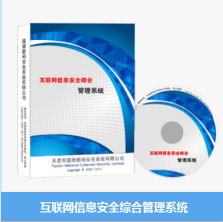
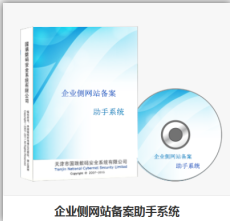
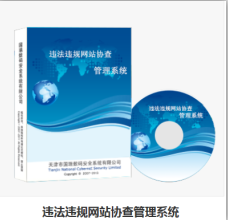

互联网安全信息管理系统

企业侧网站备案助手系统

违法违规网站协查管理系统
天津市国瑞数码安全系统股份有限公司（简称“国瑞数码”）是一家国家级高新技术企业。公司成立于1999年 11月，注册资本2200万，是由国家密码管理局审核批准的“商用密码产品生产定点单位”和“商用密码产品销售许可单位”，并拥有国家保密局颁发的涉密信息系统集成甲级资质证书。
自成立以来，国瑞数码始终坚持自主研发工作，先后推出了PKI电子身份认证、PMI授权管理、访问控制网关、瑞盾智能密码钥匙、网站防篡改、终端安全登录、安全公文传输
ICP/IP地址/域名信息备案管理、接入资源管理、IDC/ISP信息安全管理、网络身份实名验证等产品，并培养了一批优秀的技术人员和管理人员。通过多年积累，国瑞数码在互联网管理、密码技术
访问控制技术、网络攻防技术、大数据分析技术、虚拟计算技术以及下一代互联网管理等方面拥有了丰富的产品研发和项目建设经验，承建了工业和信息化部某单位多项全国性信息化系统，成为该单位十余年来重要的技术支撑单位。
虚拟计算技术以及下一代互联网管理等方面拥有了丰富的产品研发和项目建设经验，承建了工业和信息化部某单位多项全国性信息化系统，成为该单位十余年来重要的技术支撑单位。
2009年以来，国瑞数码为工业和信息化部承建了互联网网站备案和全国互联网综合安全管理平台系统（全国IDC/ISP信息安全管理系统），参与制定相关行业标准。在该系统的“部-省-企业”三级架构中
不但占据“部-省”制高点，还为数百家企业建立企业系统，成为该领域唯一涵盖“部-省-企业”三级用户的系统提供商。